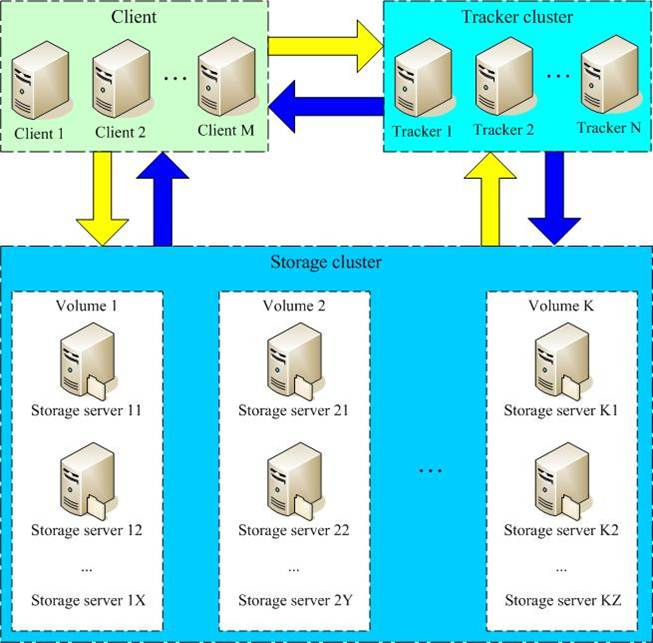
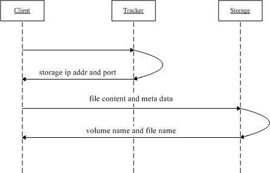
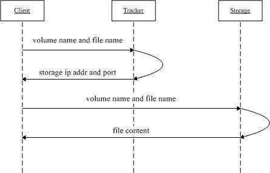
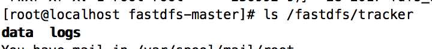
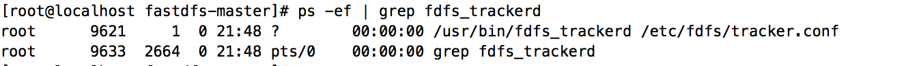
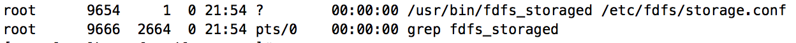

FastDFS是由淘宝的余庆先生所开发，是一个轻量级、高性能的开源分布式文件系统，用纯C语言开发，包括文件存储、文件同步、文件访问（上传、下载）、存取负载均衡、在线扩容、相同内容只存储一份等功能，适合有大容量存储需求的应用或系统。做分布式系统开发时，其中要解决的一个问题就是图片、音视频、文件共享的问题，分布式文件系统正好可以解决这个需求。同类的分布式文件系统有谷歌的GFS、HDFS（Hadoop）、TFS（淘宝）等。
源码开放下载地址：https://github.com/happyfish100



FastDFS两个主要的角色：Tracker Server 和 Storage Server Tracker Server：跟踪服务器，主要负责调度storage节点与client通信，在访问上起负载均衡的作用，和记录storage节点的运行状态，是连接client和storage节点的枢纽。 Storage Server：存储服务器，保存文件和文件的meta data（元数据） Group：文件组，也可以称为卷。同组内服务器上的文件是完全相同的，做集群时往往一个组会有多台服务器，上传一个文件到同组内的一台机器上后，FastDFS会将该文件即时同步到同组内的其它所有机器上，起到备份的作用。 meta data：文件相关属性，键值对（Key Value Pair）方式，如：width=1024, height=768。和阿里云OSS的meta data相似。
跟踪服务器（Tracker Server）：10.0.31.189 存储服务器（Storage Server）：10.0.31.189 操作系统：CentOS6.8 用户：root 数据存储目录：/fastdfs 安装包： fastdfs-master-V5.05.zip：FastDFS源码 libfastcommon-master.zip：（从 FastDFS 和 FastDHT 中提取出来的公共 C 函数库） fastdfs-nginx-module-master.zip：storage节点http服务nginx模块 nginx-1.10.0.tar.gz：Nginx安装包
下载完成后，将压缩包解压到/usr/local目录下
xxxxxxxxxx[root@localhost ~]# yum install make cmake gcc gcc-c++ x[root@localhost ~]# cd /usr/local[root@localhost local]# unzip libfastcommon-master.zip[root@localhost local]# cd libfastcommon-master[root@localhost libfastcommon-master]# ll总用量 36drwxr-xr-x. 2 root root 4096 7月 6 2017 doc-rw-r--r--. 1 root root 8005 7月 6 2017 HISTORY-rw-r--r--. 1 root root 566 7月 6 2017 INSTALL-rw-r--r--. 1 root root 1607 7月 6 2017 libfastcommon.spec-rwxr-xr-x. 1 root root 3099 7月 6 2017 make.shdrwxr-xr-x. 2 root root 4096 7月 6 2017 php-fastcommon-rw-r--r--. 1 root root 2763 7月 6 2017 READMEdrwxr-xr-x. 3 root root 4096 9月 28 2017 src####编译、安装[root@localhost libfastcommon-master]# ./make.sh[root@localhost libfastcommon-master]# ./make.sh install xxxxxxxxxx[root@localhost ~]# cd /usr/local[root@localhost local]# unzip fastdfs-master.zip[root@localhost local]# cd fastdfs-master[root@localhost fastdfs-master]# ll总用量 136drwxr-xr-x. 3 root root 4096 9月 28 2017 clientdrwxr-xr-x. 2 root root 4096 9月 28 2017 commondrwxr-xr-x. 2 root root 4096 8月 10 2017 conf-rw-r--r--. 1 root root 35067 8月 10 2017 COPYING-3_0.txt-rw-r--r--. 1 root root 3171 8月 10 2017 fastdfs.spec-rw-r--r--. 1 root root 33207 8月 10 2017 HISTORYdrwxr-xr-x. 2 root root 4096 8月 10 2017 init.d-rw-r--r--. 1 root root 7755 8月 10 2017 INSTALL-rwxr-xr-x. 1 root root 5548 8月 10 2017 make.shdrwxr-xr-x. 2 root root 4096 8月 10 2017 php_client-rw-r--r--. 1 root root 2380 8月 10 2017 README.md-rwxr-xr-x. 1 root root 1768 8月 10 2017 restart.sh-rwxr-xr-x. 1 root root 1680 8月 10 2017 stop.shdrwxr-xr-x. 4 root root 4096 9月 28 2017 storagedrwxr-xr-x. 2 root root 4096 8月 10 2017 testdrwxr-xr-x. 2 root root 4096 9月 28 2017 tracker## 编译、安装[root@localhost fastdfs-master]# ./make.sh[root@localhost fastdfs-master]# ./make.sh install服务脚本文件位置
xxxxxxxxxx/etc/init.d/fdfs_storaged/etc/init.d/fdfs_trackerd配置文件（示例配置文件）：
xxxxxxxxxx所在位置:/etc/fdfs[root@localhost fastdfs-master]# ll /etc/fdfs/-rw-r--r--. 1 root root 1461 9月 28 2017 client.conf.sample-rw-r--r--. 1 root root 7927 9月 28 2017 storage.conf.sample-rw-r--r--. 1 root root 7200 9月 28 2017 tracker.conf.sample命令行工具（/usr/bin目录下）
xxxxxxxxxx[root@localhost fastdfs-master]# ll /usr/bin/ | grep fdfs-rwxr-xr-x. 1 root root 262291 9月 28 2017 fdfs_appender_test-rwxr-xr-x. 1 root root 261988 9月 28 2017 fdfs_appender_test1-rwxr-xr-x. 1 root root 252300 9月 28 2017 fdfs_append_file-rwxr-xr-x. 1 root root 251458 9月 28 2017 fdfs_crc32-rwxr-xr-x. 1 root root 252407 9月 28 2017 fdfs_delete_file-rwxr-xr-x. 1 root root 253222 9月 28 2017 fdfs_download_file-rwxr-xr-x. 1 root root 252948 9月 28 2017 fdfs_file_info-rwxr-xr-x. 1 root root 265628 9月 28 2017 fdfs_monitor-rwxr-xr-x. 1 root root 879078 9月 28 2017 fdfs_storaged-rwxr-xr-x. 1 root root 268651 9月 28 2017 fdfs_test-rwxr-xr-x. 1 root root 267828 9月 28 2017 fdfs_test1-rwxr-xr-x. 1 root root 374227 9月 28 2017 fdfs_trackerd-rwxr-xr-x. 1 root root 253350 9月 28 2017 fdfs_upload_appender-rwxr-xr-x. 1 root root 256992 9月 28 2017 fdfs_upload_file
xxxxxxxxxx[root@localhost fastdfs-master]# cp /etc/fdfs/tracker.conf.sample /etc/fdfs/tracker.conf xxxxxxxxxx[root@localhost fastdfs-master]# vim /etc/fdfs/tracker.conf###修改内容如下disabled=false # 启用配置文件port=22122 # tracker服务器端口（默认22122）base_path=/fastdfs/tracker # 存储日志和数据的根目录 xxxxxxxxxx [root@localhost fastdfs-master]# mkdir -p /fastdfs/tracker xxxxxxxxxx[root@localhost fastdfs-master]# vi /etc/sysconfig/iptables末尾添加-A INPUT -m state --state NEW -m tcp -p tcp --dport 22122 -j ACCEPT保存退出重启防火墙：service iptables restart xxxxxxxxxx [root@localhost fastdfs-master]# /etc/init.d/fdfs_trackerd start 初次启动，会在/fastdfs/tracker目录下生成logs、data两个目录
检查FastDFS Tracker Server是否启动成功：`
xxxxxxxxxx ps -ef | grep fdfs_trackerd
xxxxxxxxxx[root@localhost fastdfs-master]# cp /etc/fdfs/storage.conf.sample /etc/fdfs/storage.conf xxxxxxxxxx[root@localhost fastdfs-master]# vi /etc/fdfs/storage.conf xxxxxxxxxx修改部分内容如下disabled=false # 启用配置文件port=23000 # storage服务端口base_path=/fastdfs/storage # 数据和日志文件存储根目录store_path0=/fastdfs/storage # 第一个存储目录tracker_server=10.0.31.189:22122 # tracker服务器IP和端口,此处是上面预定好的 iphttp.server_port=80 # http访问文件的端口,此处需要和后面 nginx 监听端口保持一致 xxxxxxxxxx[root@localhost fastdfs-master]# mkdir -p /fastdfs/storage #此处上面配置的 base path 和store_path0路径,因为上面的路径可能不存在 xxxxxxxxxx[root@localhost fastdfs-master]# vi /etc/sysconfig/iptables添加如下端口行：-A INPUT -m state --state NEW -m tcp -p tcp --dport 23000 -j ACCEPT保存退出重启防火墙：[root@localhost fastdfs-master]# service iptables restart xxxxxxxxxx[root@localhost fastdfs-master]# /etc/init.d/fdfs_storaged start初次启动，会在/fastdfs/storage目录下生成logs、data两个目录。 检查FastDFS Tracker Server是否启动成功： ps -ef | grep fdfs_storaged

xxxxxxxxxx[root@localhost fastdfs-master]# cp /etc/fdfs/client.conf.sample /etc/fdfs/client.conf[root@localhost fastdfs-master]# vim /etc/fdfs/client.conf# 修改以下配置，其它保持默认base_path=/fastdfs/trackertracker_server=10.0.31.189:22122 #修改为tracker_server地址和端口 xxxxxxxxxx[root@localhost fastdfs-master]# /usr/bin/fdfs_upload_file /etc/fdfs/client.conf /root/logo.png返回内容 返回文件ID号：/group1/M00/00/00/CgAfvVnMWOiAaxm0AAA5ilsiE-g844.png如果返回类似内容,则上传成功FastDFS 通过 Tracker 服务器，将文件放在 Storage 服务器存储，但是同组存储服务器之间需要进入文件复制，有同步延迟的问题。假Tracker 服务器将文件上传到了 10.0.31.201，上传成功后文件ID已经返回给客户端。此时 FastDFS 存储集群机制会将这个文件同步到同组存储 10.0.31.202，在文件还没有复制完成的情况下，客户端如果用这个文件 ID 在 10.0.31.126 上取文件，就会出现文件无法访问的错误。而 fastdfs-nginx-module 可以重定向文件连接到源服务器取文件，避免客户端由于复制延迟导致的文件无法访问错误
xxxxxxxxxx[root@localhost fastdfs-master]# cd /usr/local[root@localhost local]# unzip fastdfs-nginx-module-master.zip xxxxxxxxxxNginx安装请参考Nginx源码安装文档注意：在执行./configure配置nginx参数的时候，需要将fastdfs-nginx-moudle源码作为模块编译进去：./configure --prefix=/usr/local/nginx --sbin-path=/usr/bin/nginx --add-module=/usr/local/fastdfs-nginx-module-master/src xxxxxxxxxx[root@localhost local]# cp /usr/local/fastdfs-nginx-module-master/src/mod_fastdfs.conf /etc/fdfs/[root@localhost local]# vi /etc/fdfs/mod_fastdfs.conf#修改以下配置 其他配置默认即可connect_timeout=10 # 客户端访问文件连接超时时长（单位：秒）base_path=/tmp # 临时目录tracker_server=10.0.31.189:22122 # tracker服务IP和端口storage_server_port=23000 # storage服务端口group_name=group1 # 组名url_have_group_name=true # 访问链接前缀加上组名store_path0=/fastdfs/storage # 文件存储路径 xxxxxxxxxxroot@localhost local]# cd /usr/local/fastdfs-master/confroot@localhost local]# cp http.conf mime.types /etc/fdfs/ xxxxxxxxxxroot@localhost local]# ln -s /fastdfs/storage/data/ /fastdfs/storage/data/M00 xxxxxxxxxxroot@localhost local]# vim /usr/local/nginx/conf/nginx.conf注意下面的 user root此处打开前面注释并修改为 root 防止后面运行出错
xxxxxxxxxxuser root;worker_processes 1;events { worker_connections 1024;}http { include mime.types; default_type application/octet-stream; sendfile on; keepalive_timeout 65; server { ##此处和前面storage.conf配置的 http.server 保持一致 listen 80; server_name localhost; ##配置通配符,将/group 开头的地址映射到 fastdfs 的项目,如果#只有一个 group1 可以直接写 group1 location ~/group([0-9])/M00 { ngx_fastdfs_module; } error_page 500 502 503 504 /50x.html; location = /50x.html { root html; } }}为了防止出现问题,最好在防火墙中放行80端口,放行方式和上面放行其他的一致,修改完成后保存重启防火墙
xxxxxxxxxxroot@localhost local]# /usr/bin/nginxngx_http_fastdfs_set pid=xxxnginx重启命令为：/usr/sbin/nginx -s reload启动nginx后，如果打印出ngx_http_fastdfs_set pid=xxx，表示fastdfs-nginx-module模块加载成功了，xxx表示模块的进程ID。测试上传后返回的文件ID为：group1/M00/00/00/CgAfvVnMWOiAaxm0AAA5ilsiE-g844.png，用浏览访问的地址为：http://10.0.31.189/group1/M00/00/00/CgAfvVnMWOiAaxm0AAA5ilsiE-g844.png